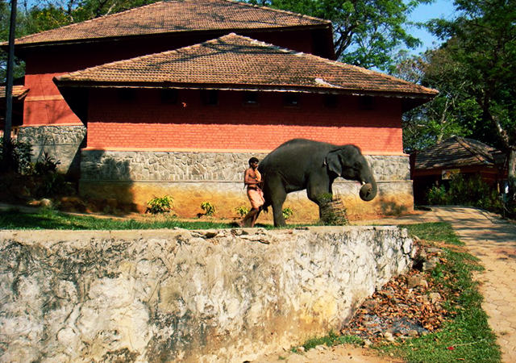

PATHANAMTHITTA
Pathanamthitta is a town immersed in spirituality and mysticism. Blessed with several ancient temples, it is renowned as headquarters of pilgrimage in Kerala as Sabarimala is situated in the Pathanamthitta district. It is a land of untouched beauty with pristine rivers, lofty mountain ranges and sprawling coconut groves.The region is parted into a fascinating topography of highlands, midlands and lowlands crafted by three rivers coursing in the town. The town of Pathanamthitta is also marked by a culture unique to this place as well as an art of metal mirrors i.e. Aranmula Kannadi, handcrafted with intricacy and poise. The town also practices the art of 'vaasthu vidya' in its purest form at a heritage village of Vassthu Vidya Gurukulam.
Top Must Visit Places in Pathanamthitta
1.Elephant Training Center, Konni
The elephant training center in Konni, situated about 11 km from Pathanamthitta town is a popular destination among tourists. Surrounded by dense forest, this place was once used to train wild elephants.The locally known “aanakoodu”, the huge wooden cage built to house elephants, is the major attraction of this place. This massive wooden cage can accommodate three or four elephants at a time. Elephant safaris are available at this place along with adventurous trekking programs. 
2.Gavi
Gavi is a pristine and picturesque forest haven in Pathanamthitta. The place started being hailed as a “must-visit” on the release of the movie “Ordinary”. And when Alister International listed it among major eco-tourism centres and one of the must-visit places in India, it became famous amongst tourists, especially the Europeans.Gavi offers its visitors a variety of activities like trekking, wildlife watching, night safaris, and outdoors camps.This breathtaking eco-tourism spot is bound to cast its magical spell on every visitor and is definitely a place that should not be missed in Kerala.
3.Aruvikkuzhy Waterfalls
Aruvikkuzhy Falls is a gem in the crown of Pathanamthitta’s natural beauty. Located 7km from Kozhencherry and about 2km from Thadiyoor the waterfall is a visually pleasing sight.This falls often gets confused for Aruvikkuzhi Waterfall in Kottayam.
4.Kaviyoor Rock Cut Temple
This temple is one of the rare specimens of rock-cut temples in Kerala. The archaeological department preserves it as a monument and is one of the three rock-cut temples in Kerala.Built on the banks of the River Manimala, it is an 8th century construction in the Pallava style of architecture and is hence considered a place of great archaeological importance. The temple is located 28.3 km from Pathanamthitta town and can be reached by bus or private vehicles.